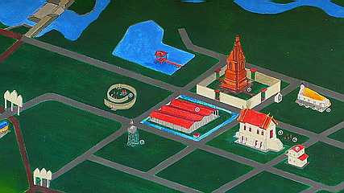

いよいよ本格的に東北部へ移動した。
タイの国土は大まかにバンコクのある中央部、マレー半島部を中心とする南部、チェンマイを中心とした北部、そしてこの東北部の4つに区分される（あとカンボジア国境付近が西部と呼ばれることもあるようだが、大抵中央部に組み込まれているみたい）。
で、東北部はイサーンと呼ばれている。
タイの中でもとりわけ貧しいといわれているところだそうで。
強烈な赤土の大地が延々と広がるところだ。
そんなイサーンの片田舎を真っ直ぐな道が続く。
サトウキビを満載にしたトラックを何台も抜きながらとある寺に着く。
WatPhraThatNongSamMunという寺である。
牛以外何もない田舎道にいきなり現れる門。
奇妙な彫像やらレリーフがあるとのことだが…
ハイ、出ましたよ〜！
ロータリー状の交差点にそれぞれ立つ謎のコンクリ像。
神さま、なのだろうが若干私服の神さまも混ざってたりして。
ピンクのスラックスに黄色い縦ボーダーのTシャツ、素敵過ぎますね。
境内の主要部分はこんな感じ。実際にはこの周辺に僧房やら色々あります）。

| とりあえず奥の方から行ってみましょうか。 まずは巨大な寝釈迦さんにご挨拶。 でも寝釈迦さん、体、長すぎないか？ 我々を運んでくれた運ちゃんも何事かを必死に祈っている。 そんな必死の願いを聞いているのかいないのか、 「ふ〜ん、大変そうだね〜」てな塩梅。 |
寝釈迦さんに対峙する変な顔の神さま。

寝釈迦さんの裏手には巨大な蟻塚があり、そこに奉納物の残滓が捨てられていた。
寝釈迦さんの前にあった小さな祠。
生首を乗せた人魚がキモかったです…
本堂はコンクリ像の勢いとは裏腹にチョット寂しげ。
建物の台座部分が崩れてたり、本堂の中はガランとして犬がうろついてたり。

で、本堂隣の壁のない建物。
壁がないかわりに柱、多過ぎ。
中央には柱に囲まれて仏像があって、まるで牢屋のようでした。
で、その仏さんの脇にいた方。どうした。君ィ。
隣には古い仏塔が建っている。
レンガ積みの遺跡といってもいいレベルの仏塔はこの寺のキモの部分のようで、周辺の施設は見向きもしないのにここだけは地元のオバサンたちが掃除をしてました。
で、注目なのがこの仏塔をぐるりと囲む壁。
派手な色彩のレリーフが古い仏塔の四方を囲んでます。
仏教説話かタイの伝説をモチーフにしているのだろうが、こっちはチンプンカンプン。
何故か杖を突いた婆さまのエピソードが多いようで。
見たところペンキ塗りたてっぽい。
中央の仏塔が古式ゆかしき塔だけに周囲のビビッドな壁ばっかり目立って仕方ない。
火葬
象さん。勿論タイでは神聖な生き物であり、ついでに貴重な労働力＆兵器でもあった。
象さんの表情が堪んないっすね。
海に溺れる人＆トミーボーイ
何故か一本長い毛が。
こーゆーのって抜いちゃいけないんですよねえ〜。
さて、序盤戦を制しいよいよ私的には本丸である地獄に行ってみよっ！